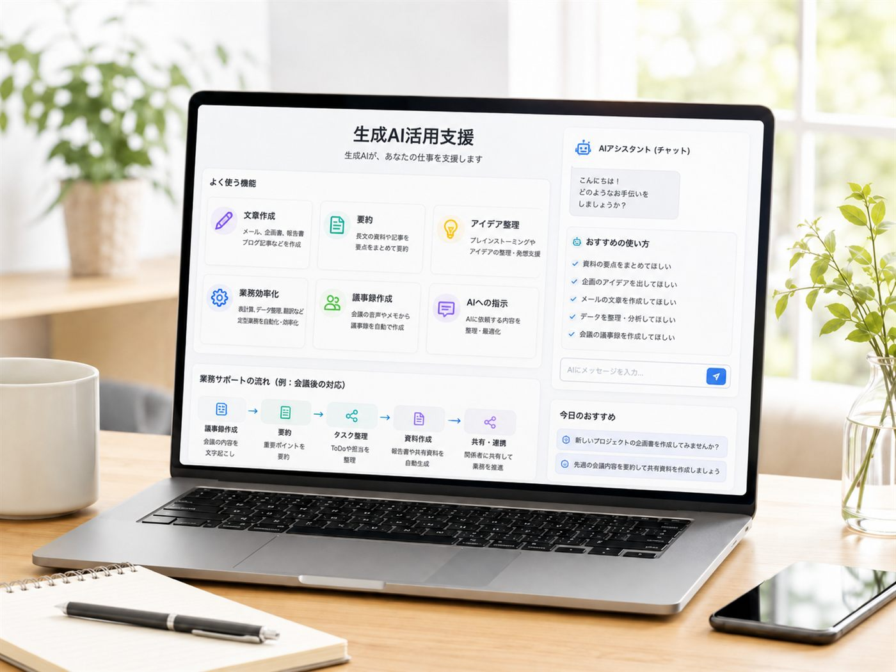
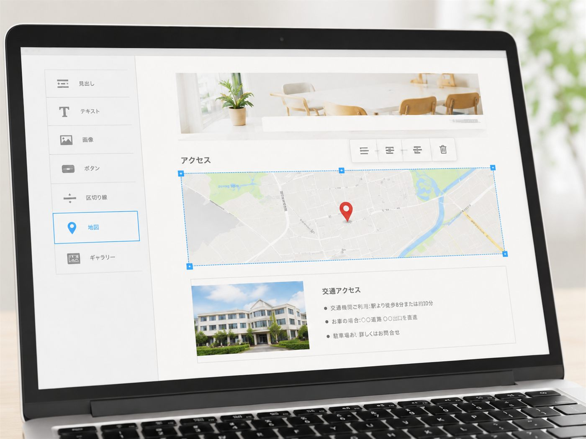
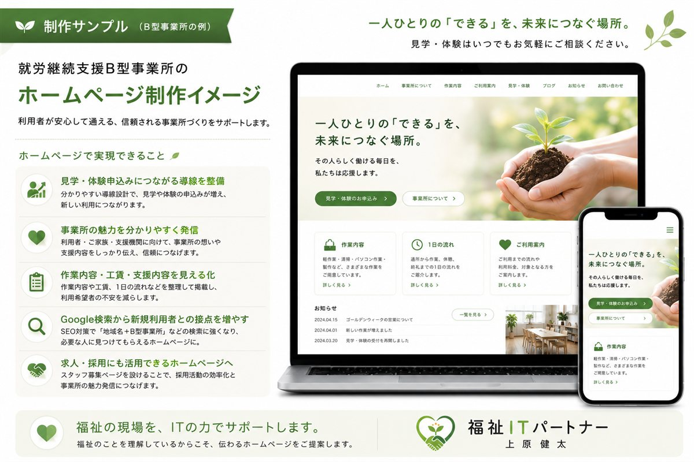

よくあるお悩み
こんなことでお悩みではありませんか？
-
?
ホームページを作りたいが、何から始めればよいか分からない
-
?
今のホームページが古く、更新できていない
-
?
問い合わせフォームやGoogleマップを整えたい
-
?
AIやGoogleサービスを活用したいが、相談できる人がいない
-
?
福祉のことを理解した人に相談したい
福祉のことを理解しているから、
伝わるIT支援ができます。
精神保健福祉士として福祉分野に関わる立場から、利用者さん・ご家族・支援機関に伝わる ホームページやIT活用を一緒に考えます。
サービス
福祉の現場に寄り添う4つの支援
制作だけで終わらない、運用まで見据えたサポートをご提供します。
ホームページ制作
新規制作・リニューアル・スマホ対応・問い合わせ導線整備
IT相談
Googleフォーム、メール、Googleドライブ、業務効率化の相談

AI活用支援
ChatGPTや生成AIを活用した文章作成・業務改善のサポート

Google導入支援
Googleフォーム、Googleマップ、Googleビジネスプロフィール等の設定支援
制作実績
制作実績

実績
やすらぎの会
新座市精神障害者家族会のホームページを新規制作。スマホ対応、問い合わせフォーム、活動内容の見える化、例会予定の掲載を実施。

制作サンプル
就労継続支援B型事業所 サンプル
見学・体験申込み、作業内容、支援内容、求人導線を意識したサンプルホームページです。

精神保健福祉士 × 福祉ITパートナー
上原健太
約18年間、人材業界・通信業界において、店舗運営・人材育成・リスクマネジメントに携わった後、 精神保健福祉士として福祉分野に関わっています。現在は福祉事業所・団体向けにホームページ制作や IT活用支援を行っています。